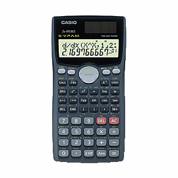

WebCal 計數機網頁
Casio fx-991MS / fx-570MS簡介

CASIO MS系列計數機有9個字母記憶，全部MS系列計數機均不獲香港考評局接納為准用計算機。這個系列計算機有多個型號，輸入的方法都是S.V.P.A.M.系統，它們的功能及規格差異，大家可以參考以下Casio網頁:
http://www.casio.com.tw/support/apply/index.php?TRE_ID=9
MS系列中功能最多的是fx-991MS及fx-570MS，它的操作方法與會考准用計算機fx-3650P/fx-3950P很相似，甚至連每個按鍵位置編排及功能大多數都是一樣，對於習慣使用fx-3650P的朋友來説，應該不會感到陌生。與fx-3650P比較，這兩部計數機只是沒有程式方面功能，但有下列較特別的功能：
˙重現拷貝: 即是能夠從重現記憶中調出多個表示式，並變成多語句。
˙CALC功能: 能夠快速重複計算函數值，是一個很方便的功能。
˙SOLVE功能: 能夠使用牛頓法求出任意方程的解。
˙工程符號計算：除了可以輸入工學符號單位外(f、p、n、μ、m、k、M、G及T)，可以設定為工學符號 顯示，答案及輸入工學單位會自動以工學符號表示，對於工學計算十分方便。
˙三個標準常態分佈概率函數。
˙矩陣計算: 最大能夠輸入3×3的矩陣，有三個矩陣的記憶及矩陣答案記憶，可以計算矩陣的加、減、乘、轉置及逆矩陣計算，亦可以計算矩陣的比例乘積、行列式及絶對值。
˙向量計算: 最大能夠輸入三維向量，有三個向量的記憶及向量答案記憶，可以計算向量的加、減、乘，亦可以計算向量的比例乘積、內積、外積及絶對值。
˙方程式計算: 能夠解一元二次方程、一元三次方程、聯立二元一次方程及聯立三元一次方程。
˙數值的絶對值小於1010，整數部份有3位分分隔號分，因此因此閱讀時較為方便及清楚。
˙二十對單位轉換及四十個科學常數。
雖然Casio fx-991MS及fx-570MS有不錯的內置功能，但計算機亦存在一些問題，與fx-3650P相同，在計算一些分數時，會得出錯誤的正負值，詳情可參看分數計算問題，計算定積分時同樣有一些問題，即是答案為零或很接近零，計數機很多時無法顯示答案(Math ERROR)。特別是使用最低準確度(取n=1)，很多時會無法得出答案，計數機只會顯示Math ERROR，詳情可參看積分計算問題。另外在計算聯立方程時，略歉不足的是沒有好像Sharp EL-506V同時計算方程組的行列式的值。
說明書下載:
FX-95MS/FX-570MS/FX-991MS (繁體中文)
FX-570MS / 991MS(繁體中文追加功能)
FX-570MS/991MS Additional Functions